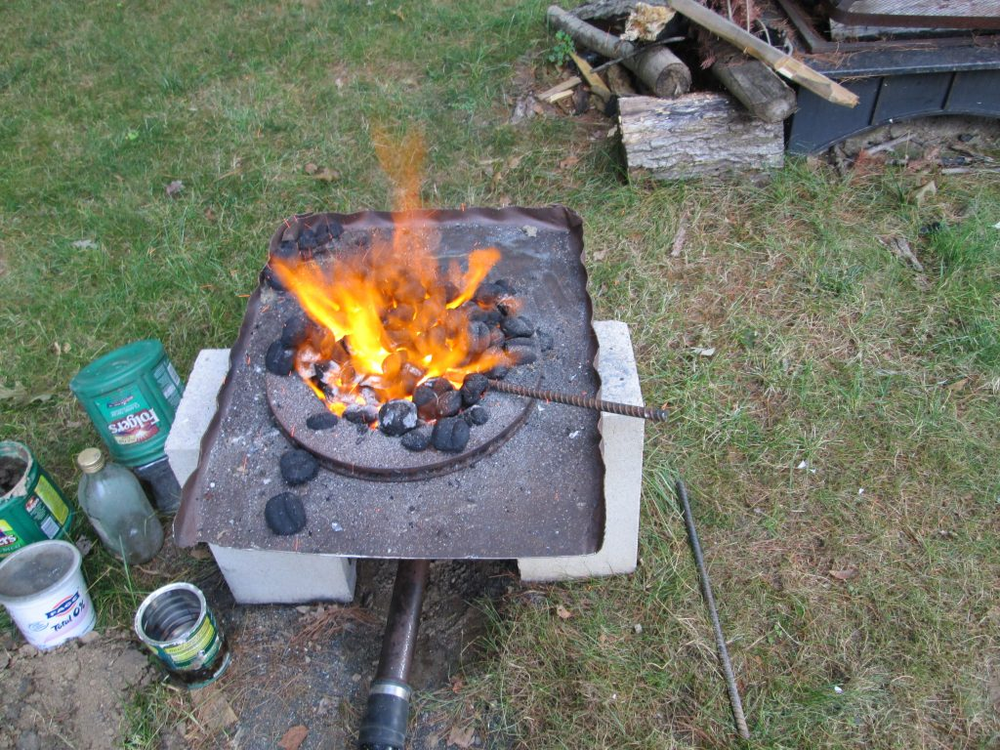

Charcoal Forge ~ 2012

This forge was my introduction to metalworking. Armed with an outdoor life magazine and access to the internet, I gathered a plan to make a charcoal forge from mainly scrap materials.
The local mechanic was kind enough to give me the brake rotor, and a matching hub. With this and some creativity I cobbled together the air vent from plumbing pipe. With air supplied from a hair dryer and your typical charcoal briquettes I soon was able to heat metal to a forging temperature — and on the rare occasion past melting!